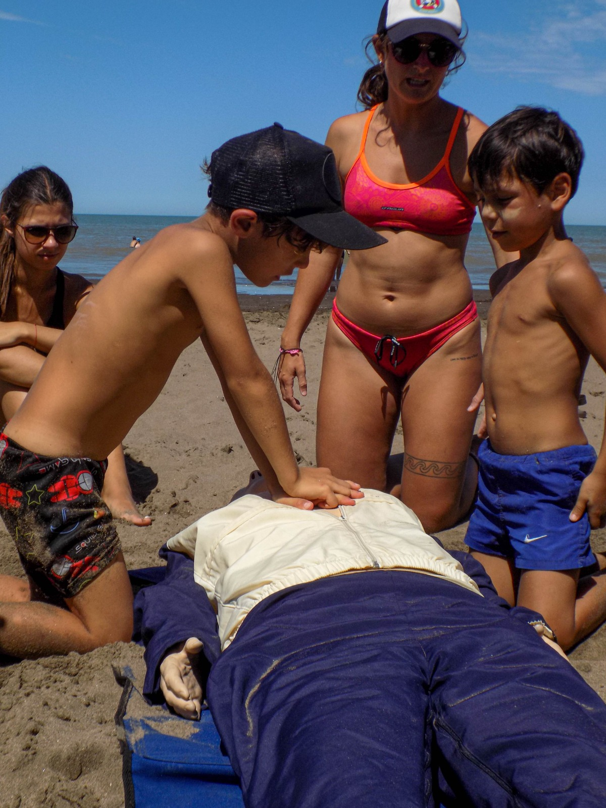

SABER CÓMO ACTUAR
RCP · Cadena de Sobrevida · activación del sistema de emergencias · primeras respuestas.
Educación + Prevención
Experiencias educativas y capacitaciones para instituciones y comunidad.
De la playa a la comunidad
Articulamos con instituciones educativas de diferentes niveles para acercar herramientas vinculadas con prevención, seguridad y comprensión del ambiente costero.
RCP · Cadena de Sobrevida · activación del sistema de emergencias · primeras respuestas.
Corrientes · vientos · mareas · topografía de playa · seguridad acuática.
ACTUAR ES IMPORTANTE. PREVENIR TAMBIÉN.
Hay conocimientos que pueden cambiar una historia.
El ambiente costero nos ofrece información todo el tiempo. Aprender a observarlo nos ayuda a comprender mejor dónde estamos.
Diseñamos cada actividad según nivel educativo, edad, cantidad de participantes, objetivos, tiempo y espacio disponible.
Inicial · Primario · Secundario · Instituciones · Clubes y organizaciones
Quiero una propuesta para mi institución →